iPhone 7功能特性与价格介绍！预定时间与发售日期！（附：发布会中文完整版视频）
iPhone 7 与 iPhone 7 Plus 将于 9 月 9 日下午3点开始预购！ 9 月 16 日开始发售！
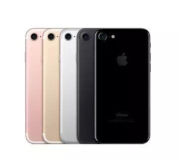
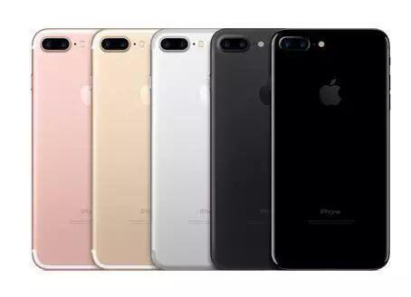
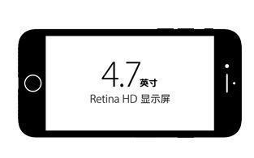
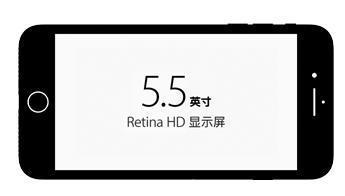
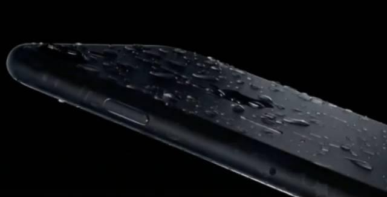
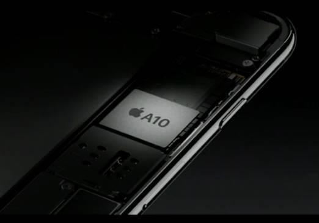
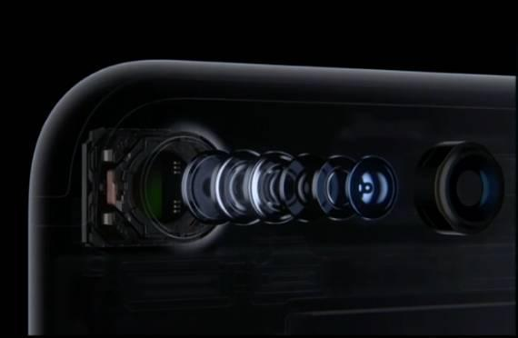
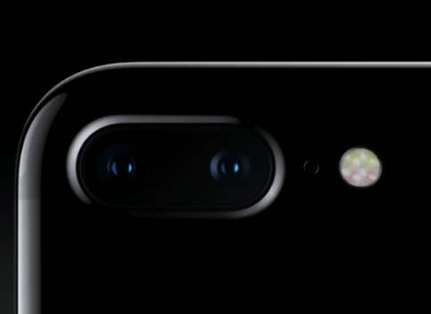
照片地理标记功能
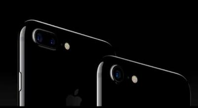
4K 视频拍摄，30 fps
1080p HD 视频拍摄，30 fps 或 60 fps
720p HD 视频拍摄，30 fps
视频光学图像防抖功能
2 倍光学变焦；最高可达 6 倍数码变焦 (仅限 iPhone 7 Plus)
4-LED True Tone 闪光灯
慢动作视频，1080p (120 fps) 和 720p (240 fps)
延时摄影视频 (支持防抖功能)
影院级视频防抖功能 (1080p 和 720p)
连续自动对焦视频
身体和面部识别功能
降噪功能
4K 视频录制过程中拍摄 800 万像素静态照片
变焦播放
视频地理标记功能
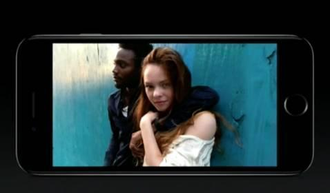
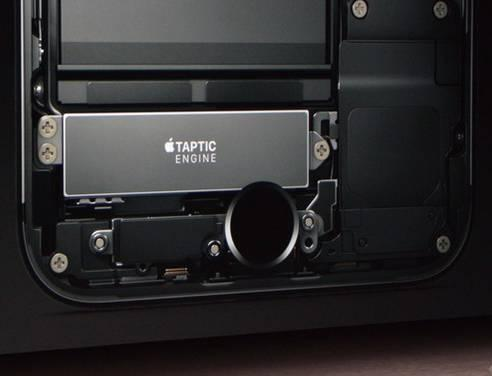
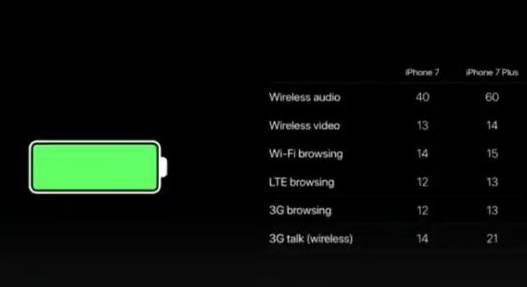

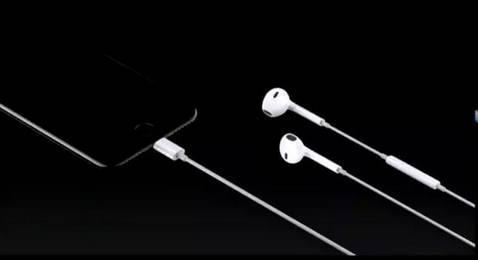
采用 Lightning 接头的 EarPods
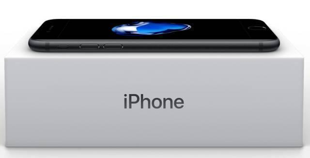
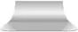
信息部/张晋鹏